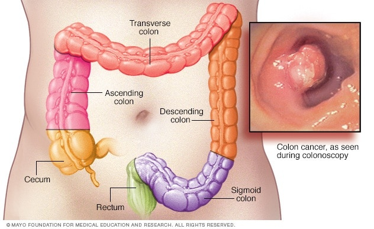

Intestinal cancer

SYMPTOMS:
Signs and symptoms of colon cancer include:
- A persistent change in your bowel habits, including diarrhea or constipation or a change in the consistency of your stool
-
Rectal bleeding or blood in your stool
-
Persistent abdominal discomfort, such as cramps, gas or pain
-
A feeling that your bowel doesn't empty completely
-
Weakness or fatigue
-
Unexplained weight loss
CAUSES
- Doctors aren't certain what causes most colon cancers.
-
In general, colon cancer begins when healthy cells in the colon develop changes (mutations) in their DNA. A cell's DNA contains a set of instructions that tell a cell what to do.
-
Healthy cells grow and divide in an orderly way to keep your body functioning normally. But when a cell's DNA is damaged and becomes cancerous, cells continue to divide — even when new cells aren't needed. As the cells accumulate, they form a tumor.
-
With time, the cancer cells can grow to invade and destroy normal tissue nearby. And cancerous cells can travel to other parts of the body to form deposits there (metastasis).